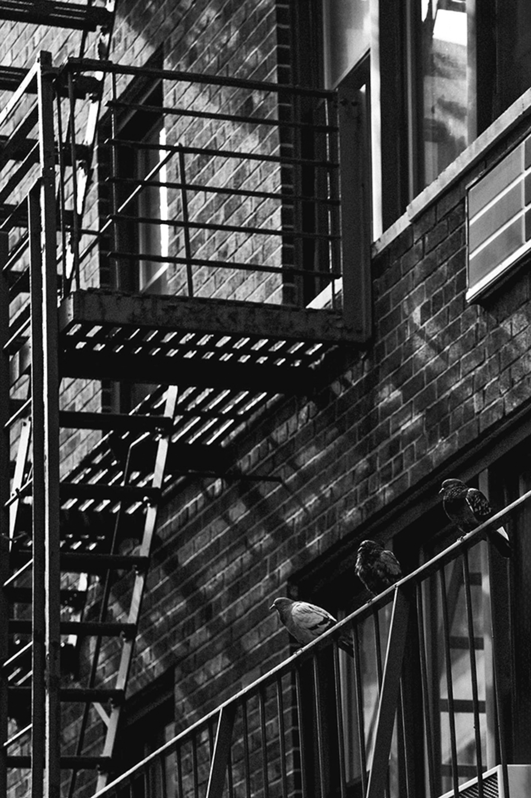
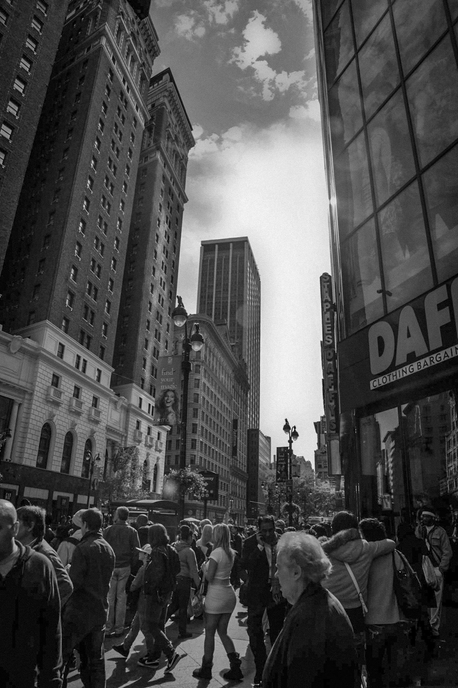
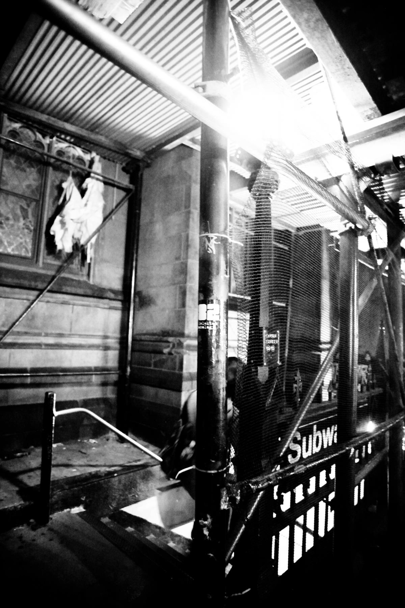

The Streets
The city is never still. It hums beneath the surface, breathes through steel and water, stretches toward light and dissolves into haze.





The city is never still. It hums beneath the surface, breathes through steel and water, stretches toward light and dissolves into haze.


